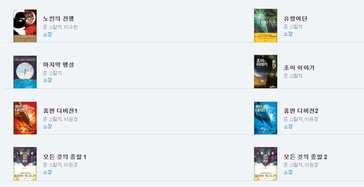

전자책 리더 사진
드디어 읽어본 존 스칼지의 상호의존성단 3편 (마지막편) 마지막 황제 입니다.
한참전 마지막 황제를 구입한 후 읽지 못하고 있다가, 얼마전부터 시작했는데 읽다보니 이전 이야기가 잘 기억이 안나서
(늙었어.. 늙었어...) 최근 며칠 동안 왠종일 전자책만 끼고 시간 날 때마다 다시 1권부터 쭉 읽기 시작해서 쉼 없이 끝까지
독파해 버렸네요.
속도감 있는 문제와 예측할 수 없는 반전 스토리, 그리고 존 스칼지 특유의 시니컬함과 유쾌함이 같이 섞여있는 좋은 작품
이었습니다.
시놉시스는 아래 동영상에서 대충 알려줌.
이번 책의 특징은 의외로 멜로(?) 요소가 섞여 있단 것입니다.
원래 존 스칼지 책이 "과학 - 우주 - 죽여 - 살려 -
쎅쓰!
! - 과학 - 우주 - 죽여 - 살려 -
파워쎅쓰!!
' 의 반복인데
아조씨가 좋
아하는 플롯입니다
이 책도 비슷하게 가는가 싶더니 뜬금없이 "멜로"가 나와서 아조씨도 마지막에 뜬금없이 눈물을 흘렸
습니다. ㅠㅠ
(형 원래 이런거 쓰는 사람 아니잖아 ㅠㅠ)
스포일러라서 어디 말할 수도 없고 엉엉엉ㅇ ㅠㅠㅠ
또 하나의 특징은 여성향(??) 요소가 다분하다는 것입니다. 미래의 인간 사회는 모계사회가 아닐까 싶을 정도로 여성이 사
회의 중심이고 여성이 주도적인 세상입니다. 첫 황제도 여성이었고 마지막 황제도 여성이네요. 가문의 수장들도 여성이고
교황도 여성입니다. 당연 주인공도 여성 ㅋㅋㅋ 그리고 여성의 여자친구들도 많이 나옵니다.
읽다가 보면 이 남자 완전히 이여자 저여자 다 건드리고 우주 바람둥이네~ 하는데, 알고보면 여자. -_-;;; 작가가 일부러 이
런 트릭을 잘 쓰는 사람이라 흥미롭습니다.
(유령여단 사례 :
아조씨마냥
개처럼 짖어대는 특징을 가진 외계인들이 침입하는 기지의 박사의 사람의 관점으로 쓴 프롤
로그가 있는데, 사실 그 박사는.... (스포일러))

아조씨가 소장중인 손 스칼지 전자 책들.
아조씨의 문체에 많은 영향을 준 사람이고, 아조씨가 마음 깊이 좋아하는 작가기에 여러분께도 추천합니다.
어디 출판사로부터는 돈 한푼 못 받았습니다. ㅋㅋㅋ
안뇽!